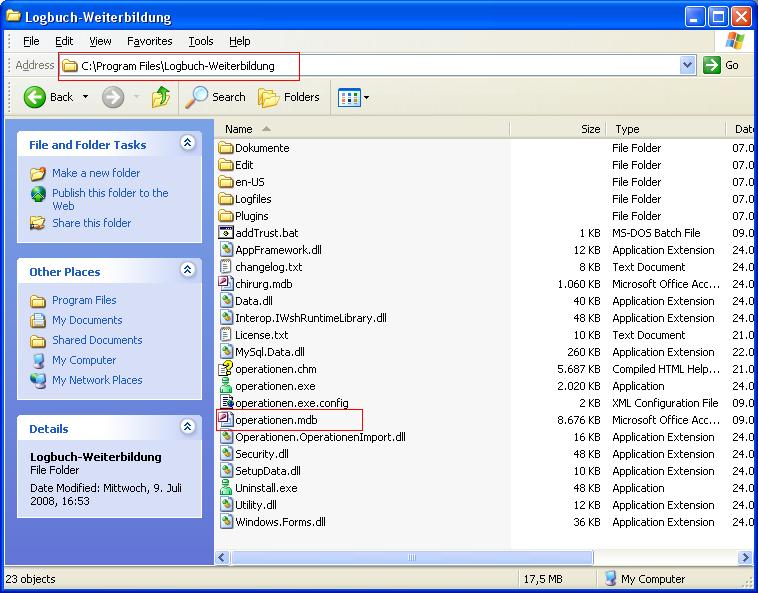

Wenn Sie die Datenbank MSAccess benutzen, sind alle Daten im Datenverzeichnis in der Datei operationen.mdb.
Kopieren Sie diese Datei in ein anderes Verzeichnis, auf einen USB-Stick oder brennen Sie sie auf eine CD.
Anschließend können Sie diese Datei wieder in das Datenverzeichnis kopieren.

Wenn Sie die Datenbanken MS SQLServer oder MySQL benutzen, muss der Datenbankadministrator dafür sorgen, dass die Datenbank gesichert wird.